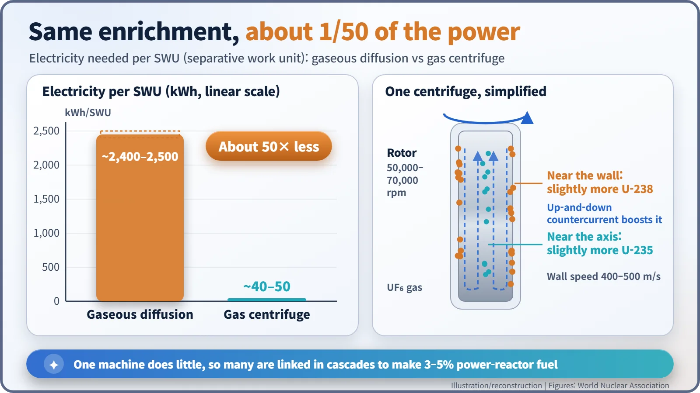
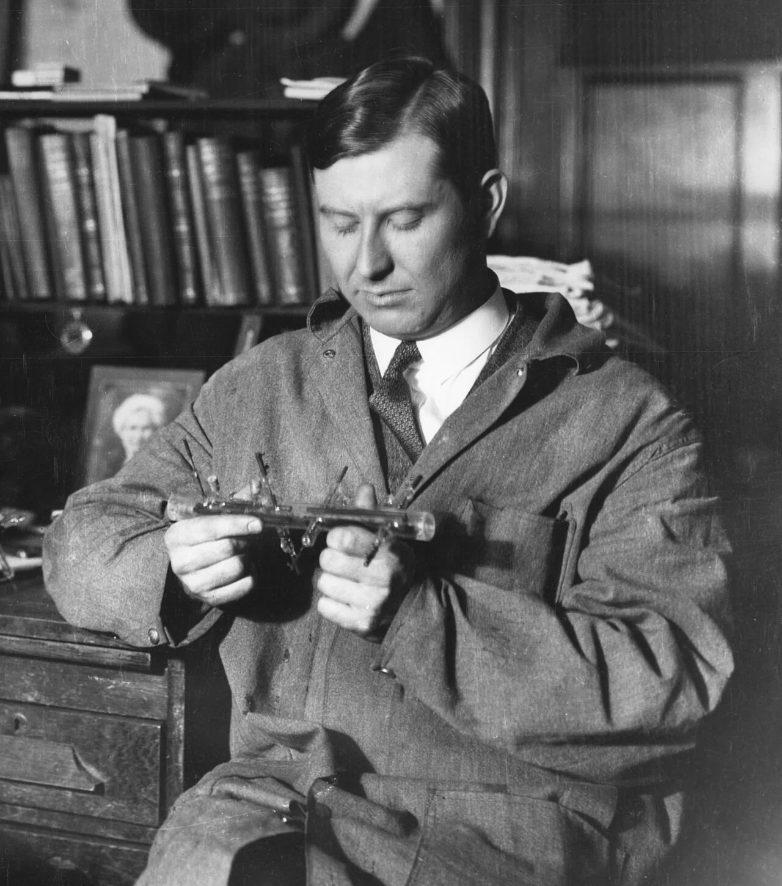
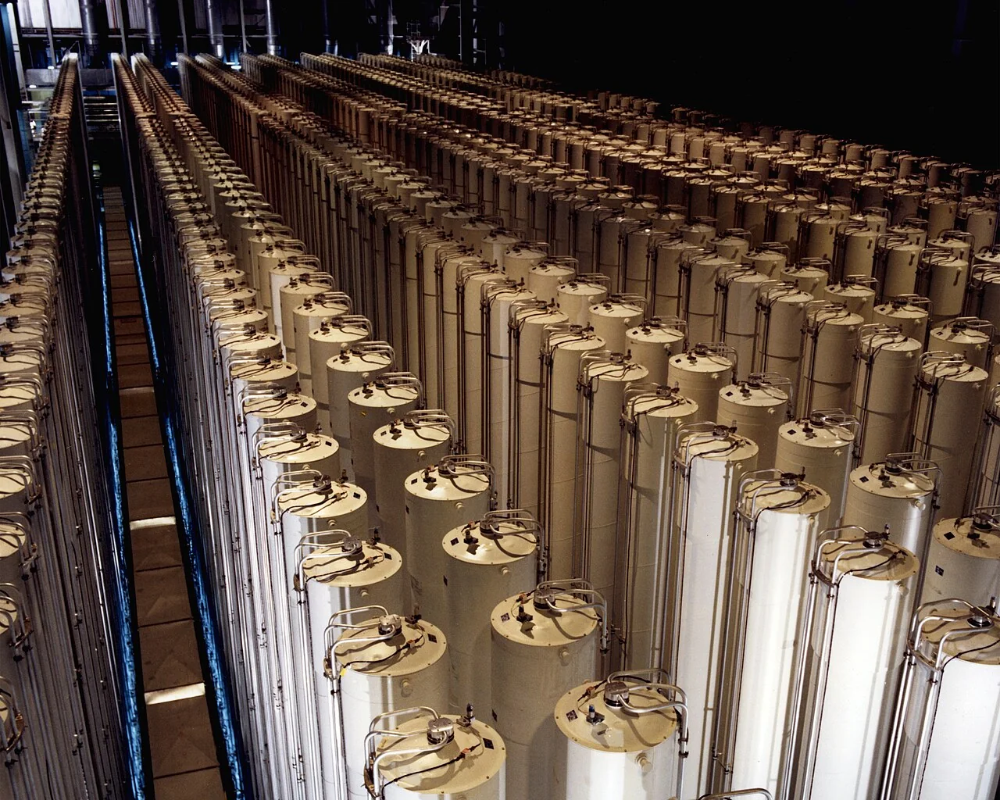
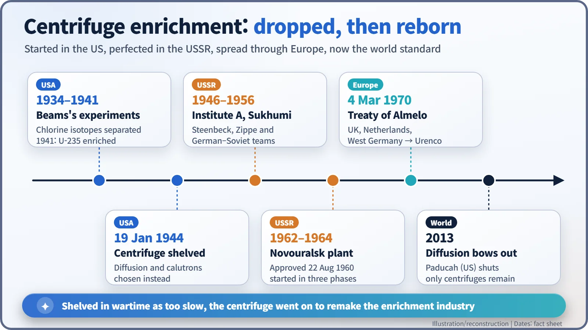

Nuclear History · 222
50,000 Turns a Minute, a Fiftieth of the Power — The Rise of Gas Centrifuge Uranium Enrichment
From Jesse Beams's wartime rotors to Sukhumi, Novouralsk and the Treaty of Almelo: enrichment at a fiftieth of the electricity.
Gas centrifuges enrich uranium using roughly a fiftieth of the electricity that gaseous diffusion needs. The method was tried and shelved in wartime America, perfected by German and Soviet scientists at Sukhumi, industrialised in the USSR from 1962 and carried into Europe through the 1970 Treaty of Almelo. Since 2013 it has been the only method used for commercial enrichment.
A homecoming in Virginia
Sometime in the late 1950s, an Austrian-born engineer in his early forties walked into the physics laboratories of the University of Virginia. His name was Gernot Zippe (1917–2008), and only a few years earlier he had been a captive in the Soviet Union. His host was Professor Jesse W. Beams (1898–1977), a man who had spun uranium in centrifuges during the Second World War, only to see the project shut down. A technology America had shelved, then refined in Soviet captivity, had come back to where it started.
Sorting twin atoms: what enrichment means
Only about 0.7% of natural uranium is uranium-235, the isotope that splits most readily. Almost all the rest is uranium-238. Most power reactors run on fuel in which the U-235 share has been raised to about 3–5%, and that job is called enrichment. Chemistry cannot do it, because the two isotopes behave identically in chemical reactions. The only handle is a tiny difference in weight.
A centrifuge turns that weight difference into separation by spinning. Uranium is converted into a gas, uranium hexafluoride (UF6), and fed into a fast-turning cylinder. Molecules carrying the heavier U-238 drift very slightly towards the wall; those with the lighter U-235 gather very slightly towards the centre. Think of a washing machine on its spin cycle, but on another scale entirely. According to the World Nuclear Association (WNA), a long, slender rotor inside a vacuum casing turns at 50,000–70,000 revolutions per minute, with its wall moving at 400–500 metres per second. An up-and-down circulation inside the rotor (a countercurrent flow) multiplies the effect, yet one machine still achieves little, so many are linked in series and parallel in a cascade. [1]

The card the Manhattan Project put down
In the 1930s Beams's team at Virginia had separated the two isotopes of chlorine with a vacuum ultracentrifuge. In 1940, with Navy funding, they turned to uranium, and in 1941, once UF6 became available, they did raise the concentration of U-235, though the yield fell short of theory. [2]

By the autumn of 1942 the machine was still separating only about 60% of what theory predicted. On 12 November 1942 the Military Policy Committee decided to go straight to full-scale plants using gaseous diffusion and electromagnetic separation, and on 19 January 1944 General Leslie Groves told James Conant that further extension of the centrifuge project "was not justified". The method had not been proven wrong; the Army simply did not believe it could be scaled up before the war ended. [2]
"Institute A" on the Black Sea
After the war the Soviet Union brought German and Austrian scientists to a secret institute at Sukhumi on the Black Sea coast. In the isotope-separation group led by physicist Max Steenbeck (1904–1981), centrifuges had top priority, and Zippe, a former prisoner of war, joined in the summer of 1946 to head the experimental work. In early 1952 the concept of a short rotor emerged, and its main elements are shared by most gas centrifuges today. Credit is disputed, however: Zippe's later account differs from Russian sources, which emphasise the contributions of Soviet scientists such as Isaak Kikoin and Evgeni Kamenev. [3]
The Soviets moved fast. In October 1955 the government decided to build a 2,435-centrifuge pilot plant at Novouralsk; on 22 August 1960 it approved a large-scale plant there, which started up in three phases between 1962 and 1964. By the late 1980s and early 1990s gaseous diffusion had been phased out completely, and, according to Oleg Bukharin's 2004 study, the electricity used for enrichment fell by an order of magnitude. [3]
The rotor crosses to Europe
Released in 1956, Zippe made his way west. At Virginia, invited with Beams's help, he rebuilt the centrifuge as unclassified research and wrote up the results. Sources differ on the dates (1958–1959 in one account, 1960 in another), and there is an often-told story that, his notes having been confiscated by the Soviets, he worked largely from memory. Around 1960 the United States realised the proliferation risk and classified centrifuge work again, but in Europe development was already under way. [6]
On 4 March 1970, at Almelo in the Netherlands, the United Kingdom, the Netherlands and West Germany signed an agreement to develop and exploit the gas centrifuge together; it entered into force on 19 July 1971. [5] The company that grew out of it, Urenco, delivered its first contract from pilot plants at Capenhurst and Almelo in 1975, began production at Gronau in Germany in 1985 and opened a plant at Eunice, New Mexico, in 2010. [4] There was a shadow too. In the 1970s A.Q. Khan, a Pakistani metallurgist working for a Urenco subcontractor, took centrifuge know-how to Pakistan, one reason why export controls and International Atomic Energy Agency (IAEA) safeguards pay particular attention to this technology.

A fifty-fold gap redraws the map
The numbers settle the contest. Enrichment effort is measured in separative work units (SWU). Gaseous diffusion needs about 2,400–2,500 kWh of electricity per SWU; modern centrifuges need about 40–50 kWh, roughly a fiftieth. The American plant in the photograph was abandoned in June 1985 after about $3 billion had been spent, yet the direction did not change. France's Georges Besse I diffusion plant closed in mid-2012 and the last U.S. diffusion plant, at Paducah, Kentucky, in mid-2013. Since then, all commercial enrichment has been done by centrifuge. [1]

Who decides how the rotor is used
Asked later about regrets, Zippe said it was "up to governments to use the centrifuge for the benefit of mankind." The same spinning rotor that slashed the energy cost of nuclear fuel also carries the task of keeping the technology in safe hands.